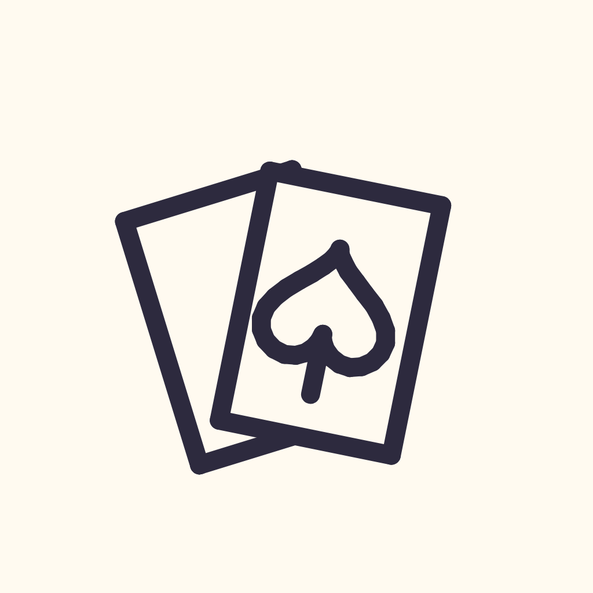

Doodle Poker
Every hand tells a story.
A poker companion: record your hands and sessions, remember the players, and doodle all over it.

Every hand tells a story.
A poker companion: record your hands and sessions, remember the players, and doodle all over it.